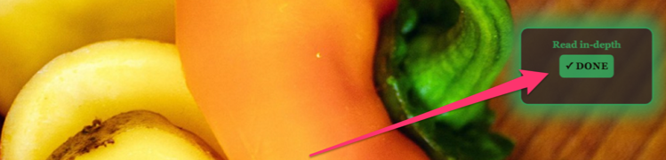
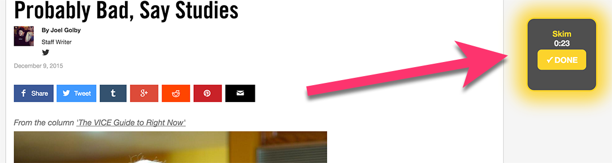
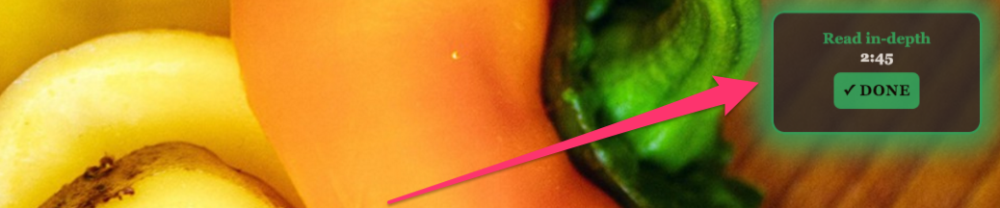

A news article will appear on the next page. Please read it in its entirety without:
- re-reading sentences
- memorizing details
- pacing yourself
- clicking on links
As soon as you are done reading click the 'DONE' button, which will look as follows:
Please SKIM the next article.
Skimming is a quick form of reading targeted at getting the gist of the text, learn how the text is organized, or understand the intention of the writer.
You have minutes to skim the next article, after which you will be AUTOMATICALLY TRANSFERRED to the questions section.
Our toolbar on the right will remind you to skim the text, show you amount of time left and allow you to proceed if you are done reading before the allotted time is over.
Please read the next article IN-DEPTH.
You have minutes to read the next article in depth, after which you will be AUTOMATICALLY TRANSFERRED to the questions section.
Our toolbar on the right will remind you to read the text in-depth, show you amount of time left and allow you to proceed if you are done reading before the allotted time is over.
